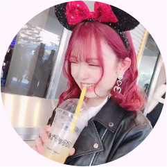

About Me
私について

ひろせ ことね
廣瀬 琴音
東京デザイン専門学校
グラフィックデザイン科 WEBデザイン専攻
Skill
スキル
文部科学省後援 色彩検定 ２級
文部科学省後援 秘書検定 ２級
Education
学歴
- 2017/04
-
春日部共栄高等学校 入学
当時は空港のグランドスタッフか、デザイナーになるか迷っていたため、どちらにも行けるよう県内の進学校に入学。
- 2020/03
-
春日部共栄高等学校 卒業
高校２年生の半ば頃、各国でのテロ事件がニュースで多く取り上げられており、グランドスタッフでは命の危険が伴うと感じデザイナーの道に進むと決心する。
- 2020/04
-
東京デザイン専門学校 入学
デザインを集中的に学びたかったため、専門学校に入学。
- 2022/03
- 東京デザイン専門学校 卒業見込み
Vision
これからのこと
小さい頃から、クリエイティブな物事が好きで趣味の延長としてデザイナーを志しました。
デザインの専門学校に入学してから、デザイナーというお仕事の大変さを学校課題や企業課題を通して身を以て感じました。しかし、デザイナーになりたいという思いは消えず、デザインの会社に就職することを決意しました。
今後は、社会人として、デザインをする身として、もっともっと成長していきたいと考えています。